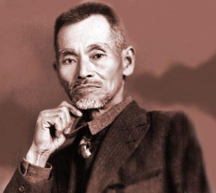

Kentsu Yabu was born on September 23, 1866, in Shuri, Okinawa. He was a prominent teacher of Shorin-ryu karate in Okinawa from the 1910s until the 1930s. Kentsu Yabu was among the first people to demonstrate karate in Hawaii. When Kentsu Yabu was a young man, he began training in Shorin-ryu karate. His teachers included both Matsumura Sokon and Itosu Anko.
In 1891, Kentsu Yabu joined the Japanese Army and served in Manchuria during the First Sino-Japanese War of 1894-1895. Kentsu Yabu was promoted to lieutenant, but his students often called him Gunso, or sergeant. After his service was over, Yabu studied at Shuri's Prefectural Teacher's Training College and in 1902, he became a teacher at Shuri's Prefectural School Number One.
Kentsu Yabu visited the United States twice, once during 1921-1922 when his oldest son was having a baby, and again in 1927. During his second visit, Yabu returned to Okinawa via Hawaii and spent about 9 months there. He spent most of his time on Oahu, but he also visited other islands. Kentsu Yabu gave two public demonstrations of karate at the Nuuanu YMCA in Honolulu.
In the late 1920s, Kentsu Yabu began training Hisataka/Kudaka Kori.
In 1936, Yabu visited Tokyo and saw the young Shoshin Nagamine, who later became another well-known karate instructor. That year he also attended the "Meeting of Okinawan Masters" in Oct. 25th, 1936 to discuss the re-naming of Tote-jutsu to Karate-do. Kentsu Yabu's favourite kata reportedly included Gojushiho and Naihanchi. Kentsu Yabu passed away at Shuri, Okinawa, on August 27, 1937.